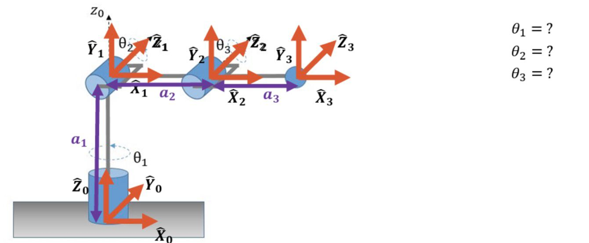
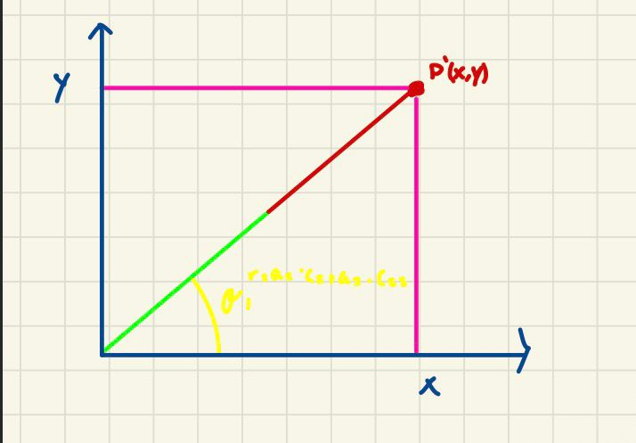
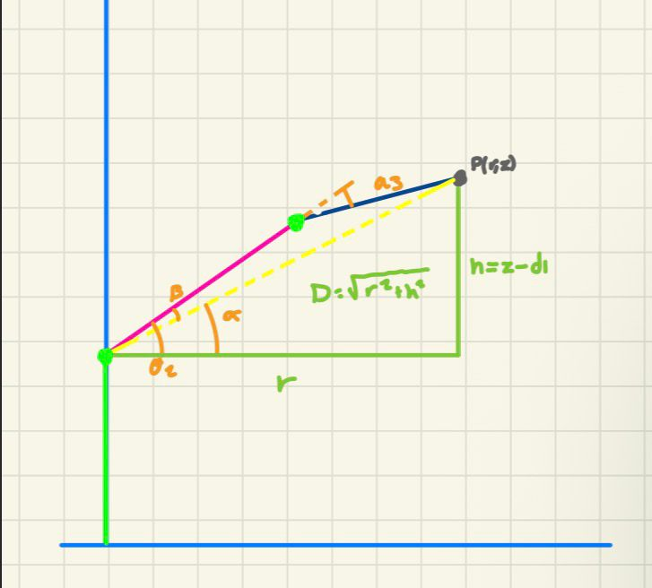

Inverse Kinematics
This repository documents Inverse Kinematics for one robot, it will explain the Geometrical method to get ecuations to late get a jacobian value
Robot Description

The robot has 3 revolute joints:
- Joint 1 (θ₁) — rotates about Z₀ (vertical axis), waist
- Joint 2 (θ₂) — rotates about horizontal axis, shoulder
- Joint 3 (θ₃) — rotates about horizontal axis, elbow
| Joint | θᵢ | dᵢ | aᵢ | αᵢ |
|---|---|---|---|---|
| 1 | θ₁ | d₁ | 0 | 90° |
| 2 | θ₂ | 0 | a₂ | 0° |
| 3 | θ₃ | 0 | a₃ | 0° |
d₁ is the vertical offset (base height). a₂, a₃ are the horizontal link lengths.
Inverse Kinematics — Geometric Method
Given a target point P = (x, y, z), find θ₁, θ₂, θ₃.
The problem is divided into two views:
| View | Solves | Why |
|---|---|---|
| Top (XY) | θ₁ | d₁ is vertical, vanishes in XY |
| Side (r–z) | θ₂, θ₃ | 2R problem in the vertical plane |
Top View

Side View

Step 1 — Solve θ₁ (Top View)
Looking down from above, d₁ disappears. The arm projects as a single ray from O to P:
Dividing y by x:
Therefore:
Step 2 — Decouple into the Side View
Since θ₁ is known, collapse the 3D problem into a 2D plane using:
Horizontal reach — distance from the Z axis to P:
Height above J₁ — subtract the fixed base offset:
Distance from J₁ to P:
Step 3 — Solve θ₃ (Law of Cosines)
In the triangle J₁ — J₂ — P, the three sides are a₂, a₃, and D.
Solving for cos(θ₃):
2·a₂·a₃·cos(θ₃) = D² − a₂² − a₃²
cos(θ₃) = (D² − a₂² − a₃²) / (2·a₂·a₃)
sin(θ₃) = ±√(1 − cos²(θ₃))
θ₃ = atan2( ±√(1 − cos²(θ₃)) , cos(θ₃) )
Step 4 — Solve θ₂ (α − β Decomposition)
α — angle from horizontal to the line J₁→P:
β — how much a₃'s bend shifts the direction of J₁→P away from a₂:
Position Jacobian — Geometric Method (3×3)
Column 1 — Joint 1
Cross product ẑ₀ × (pₑ − p₀):
[0, 0, 1] × [r·c₁, r·s₁, d₁+a₂·s₂+a₃·s₂₃]
= [ (0)·(d₁+a₂·s₂+a₃·s₂₃) − (1)·(r·s₁) ]
[ (1)·(r·c₁) − (0)·(...) ]
[ (0)·(r·s₁) − (0)·(r·c₁) ]
= [ −r·s₁ ]
[ r·c₁ ]
[ 0 ]
Column 2 — Joint 2
Cross product ẑ₁ × (pₑ − p₁):
[−s₁, c₁, 0] × [r·c₁, r·s₁, a₂·s₂+a₃·s₂₃]
= [ (c₁)·(a₂·s₂+a₃·s₂₃) − (0)·(r·s₁) ]
[ (0)·(r·c₁) − (−s₁)·(a₂·s₂+a₃·s₂₃) ]
[ (−s₁)·(r·s₁) − (c₁)·(r·c₁) ]
= [ c₁·(a₂·s₂ + a₃·s₂₃) ]
[ s₁·(a₂·s₂ + a₃·s₂₃) ]
[ −r·(s₁² + c₁²) ]
= [ c₁·(a₂·s₂ + a₃·s₂₃) ]
[ s₁·(a₂·s₂ + a₃·s₂₃) ]
[ −r ]
Column 3 — Joint 3
Cross product ẑ₂ × (pₑ − p₂):
[−s₁, c₁, 0] × [a₃·c₁·c₂₃, a₃·s₁·c₂₃, a₃·s₂₃]
= [ (c₁)·(a₃·s₂₃) − (0)·(a₃·s₁·c₂₃) ]
[ (0)·(a₃·c₁·c₂₃) − (−s₁)·(a₃·s₂₃) ]
[ (−s₁)·(a₃·s₁·c₂₃) − (c₁)·(a₃·c₁·c₂₃) ]
= [ a₃·c₁·s₂₃ ]
[ a₃·s₁·s₂₃ ]
[ −a₃·c₂₃·(s₁² + c₁²) ]
= [ a₃·c₁·s₂₃ ]
[ a₃·s₁·s₂₃ ]
[ −a₃·c₂₃ ]
Full 3×3 Position Jacobian
| −r·s₁ c₁·(a₂·s₂ + a₃·s₂₃) a₃·c₁·s₂₃ |
Jᵥ = | r·c₁ s₁·(a₂·s₂ + a₃·s₂₃) a₃·s₁·s₂₃ |
| 0 −r −a₃·c₂₃ |
Where: